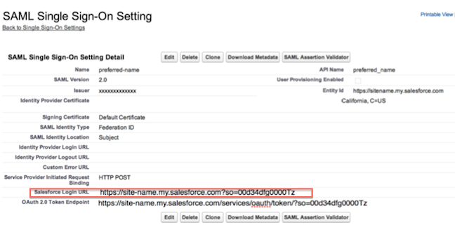
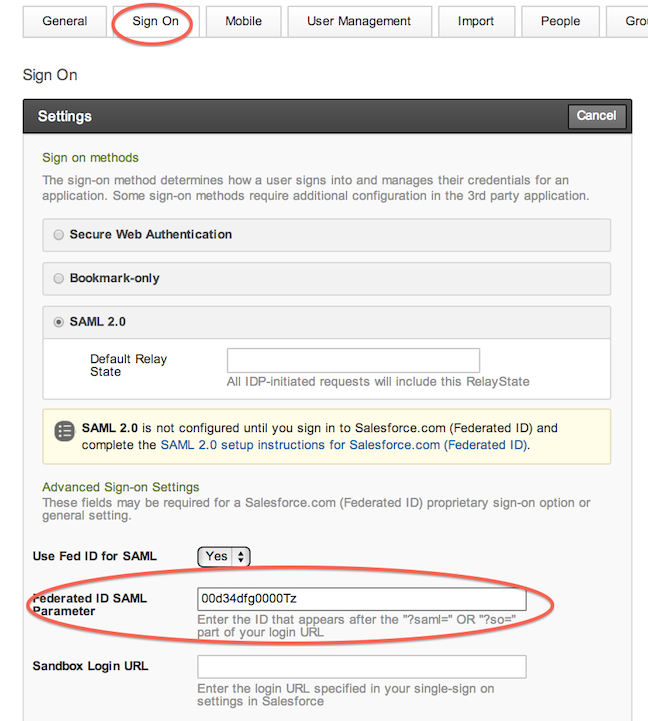
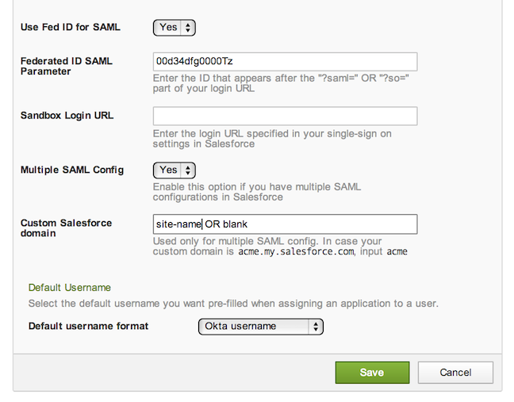

This setup might fail without parameter values that are customized for your organization. Please use the Okta Administrator Dashboard to add an application and view the values that are specific for your organization.
Read this before you enable SAML
Please turn on User Management for Salesforce Federated ID App in Okta. If User Management is not turned on for this app, users will not be authenticated in to Salesforce.
CLICK HERE to log in to Salesforce with the your administrator username and password-token.
-
Click on Setup.
-
Click Security Controls to open the sub-menu.
-
Click Single Sign-On Settings.

- Check the Checkbox for SAML Enabled.
- If you have Multiple End-points enabled, the configuration page may ask you to setup a Name and API Name. Set these values according to your preference.
- Copy and paste the following value into the Issuer field:
Sign in to the Okta Admin app to have this variable generated for you.
- Download your Okta Identity Provider Certificate, and then upload it in the Identity Provider Certificate field:
Sign in to the Okta Admin app to have this variable generated for you.
- For SAML Identity Type, select Assertion contains the Federation ID from the User object.
- For SAML Identity Location, select Identity is in the NameIdentifier element of the Subject Statement.
- (Optional) Copy and paste the following URL into Identity Provider Login URL:
Sign in to the Okta Admin app to have this variable generated for you.
- (Optional) Copy and paste the following URL into Identity Provider Logout URL:
Sign in to the Okta Admin app to have this variable generated for you.
- For Entity ID,
- If you have a custom domain setup, use https://<customDomain>.my.salesforce.com.
- If you do not have a custom domain setup, use https://saml.salesforce.com.
-
For Service Provider Initiated Request Binding, select HTTP Post.
-
Click Save.
- Look for the Salesforce Login URL which will appear after clicking Save.

- In Okta, go to the Sign On Tab of app configuration shown in the image below. For the Federated ID SAML Parameter enter the ID after "?so=" or "?saml=" specified in your Salesforce Login URL.

- In Okta, for Multiple SAML Config: If your Salesforce Login URL contains "?so=" then set Multiple Configuration as Yes. If your Salesforce Login URL contains "?saml=" then set Multiple Configuration as No.

- In Okta, for Custom Salesforce domain: If you have a Custom Salesforce Domain, such as site-name.my.salesforce.com, enter site-name, otherwise leave blank. (Hint: If your Salesforce login URL starts with https://login.salesforce.com, then leave this field blank.)
- Click Save.
- Done!